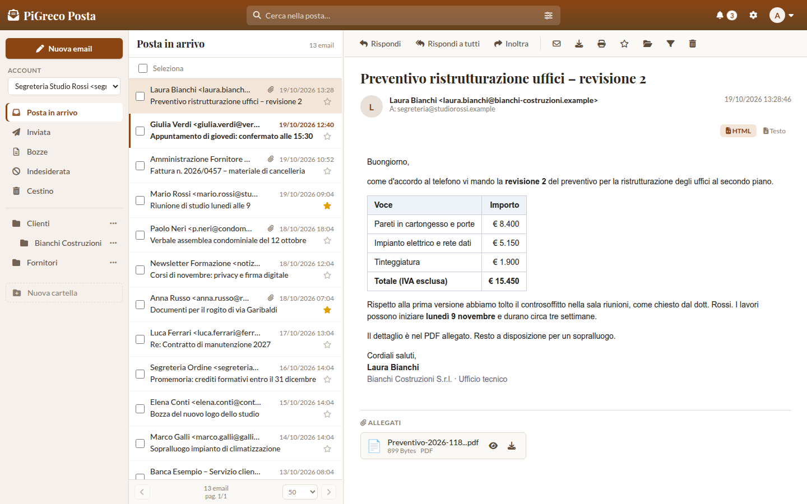
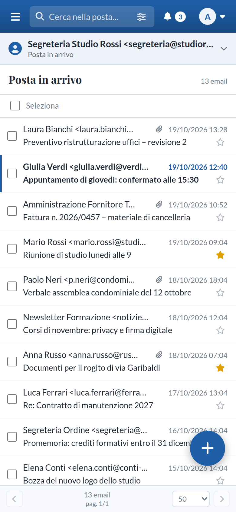
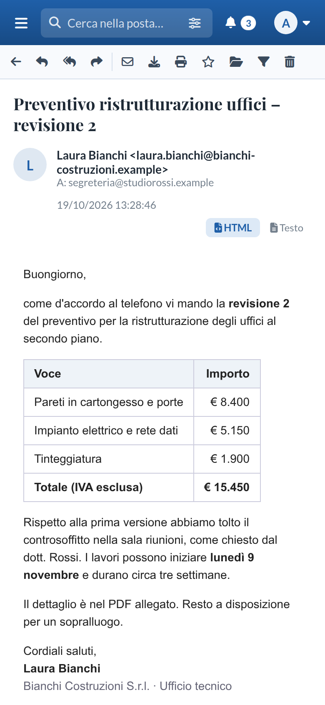
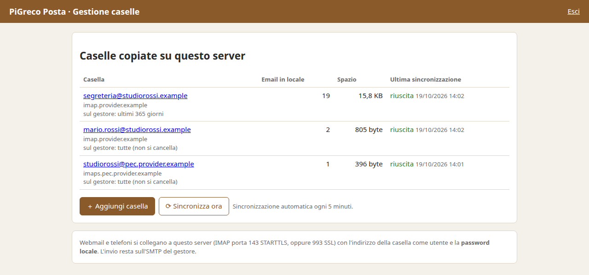

La casella è sempre piena
Lo spazio del gestore finisce, arriva l'avviso e bisogna scegliere cosa cancellare. Spesso sono proprio le email che serviranno fra tre anni.
PiGreco Posta copia tutte le caselle dell'ufficio su un computer che sta da te e te le fa leggere con una webmail moderna, anche dal telefono. Gmail, Libero, Aruba, PEC: una sola pagina, un solo accesso.

Lo spazio del gestore finisce, arriva l'avviso e bisogna scegliere cosa cancellare. Spesso sono proprio le email che serviranno fra tre anni.
La casella dello studio, quella personale, la PEC: ognuna con il suo sito, la sua app e la sua ricerca. Trovare un'email vuol dire cercarla in tre posti.
Se il gestore cambia le condizioni, blocca l'account o chiude il servizio, anni di corrispondenza restano dall'altra parte.
Le caselle restano quelle che hai già. PiGreco Posta ne tiene una copia aggiornata sul tuo computer, e tu leggi e scrivi da lì.
Nessun cambio di indirizzo, nessun trasloco. Il gestore continua a ricevere la posta come oggi.
Email nuove e stato (letta, importante) arrivano sul tuo disco. La copia non cancella mai niente, e lo spazio è quello del tuo disco.
La webmail di PiGreco Posta dal browser, oppure il programma che usi già: Thunderbird, Outlook, la posta del telefono.
Le email che scrivi partono dal server del tuo gestore, come sempre, e una copia resta nella cartella Inviata.
Tutte le caselle dell'ufficio in una pagina. Ogni collega entra con il suo nome e vede le caselle che gli spettano.
Per mittente, destinatario, oggetto o testo, in una cartella o in tutte insieme. Le email importanti si segnano con la stella.
Le email del commercialista nella sua cartella, le newsletter già lette. I filtri lavorano sul server, anche a computer spento.
Crei le tue cartelle, ci trascini dentro le email, ne selezioni dieci e le sposti in una volta.
Mentre scrivi, la bozza si salva da sola ogni 30 secondi. La riprendi dopo, anche da un altro computer.
Un comando salva caselle, database e impostazioni in un unico file, da copiare su un disco esterno.
Per ogni casella puoi decidere quanti giorni di posta lasciare sul gestore, per esempio 90. Le email più vecchie vengono tolte dal gestore, ma solo dopo aver controllato che la copia sul tuo computer c'è davvero.
All'inizio il valore è zero: non si cancella niente finché non lo decidi tu, e prima di confermare la pagina ti mostra quante email verranno tolte.


Sul telefono la webmail mostra un riquadro alla volta: le cartelle, l'elenco, l'email. Il pulsante ＋ in basso scrive una nuova email.
Preferisci l'app di posta del telefono? Collegala alla copia locale e vedi le stesse cartelle e le stesse email lette.
Indirizzo, password del gestore, «Prova l'accesso». Poi la pagina mostra per ogni casella quante email sono state copiate e quando è avvenuta l'ultima sincronizzazione.

Avvocati, commercialisti, geometri: anni di corrispondenza con i clienti da conservare e ritrovare.
Più persone sulle stesse caselle, ordini e fatture che arrivano per email, un ufficio da far funzionare.
Ricevute e messaggi certificati copiati sul tuo disco, insieme alla posta normale.
Caselle condivise fra volontari che cambiano, senza dare a tutti la password del gestore.
git clone https://github.com/ddcls/pigreco-posta.git
cd pigreco-posta
./installa.sh # crea le password, avvia tutto
http://server:8083.http://server:8080/webmail/ e collega le caselle alla copia locale.scripts/backup.sh: un file con tutto dentro.Le caselle Microsoft (Hotmail, Outlook, Live, Microsoft 365) accettano solo l'accesso OAuth2 e per ora non si possono copiare. L'interfaccia è in italiano.
PiGreco Posta è distribuito con la licenza GNU AGPL 3.0. Il codice è pubblico: chiunque può usarlo, studiarlo, modificarlo e condividerlo, e chi lo offre come servizio con delle modifiche deve pubblicarle con la stessa licenza.
Dagli stessi autori, l'archivio documentale per uffici e studi legali: l'ufficio in 3D con armadi e faldoni, la ricerca nel testo dei documenti, il modulo per gli studi legali.
Insieme a PiGreco Posta aggiunge il pulsante Archivia: l'email e i suoi allegati entrano nel faldone giusto con un clic.
Se hai già PiGreco Posta, l'archivio la trova e si collega da solo: niente da reinstallare, caselle ed email restano dove sono.